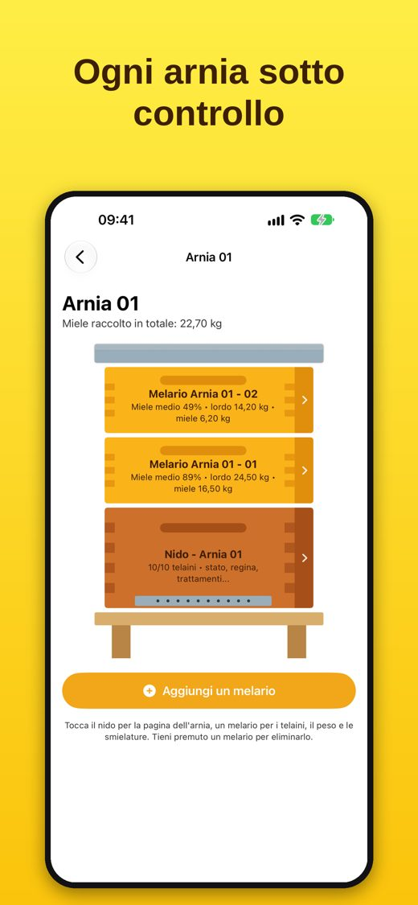
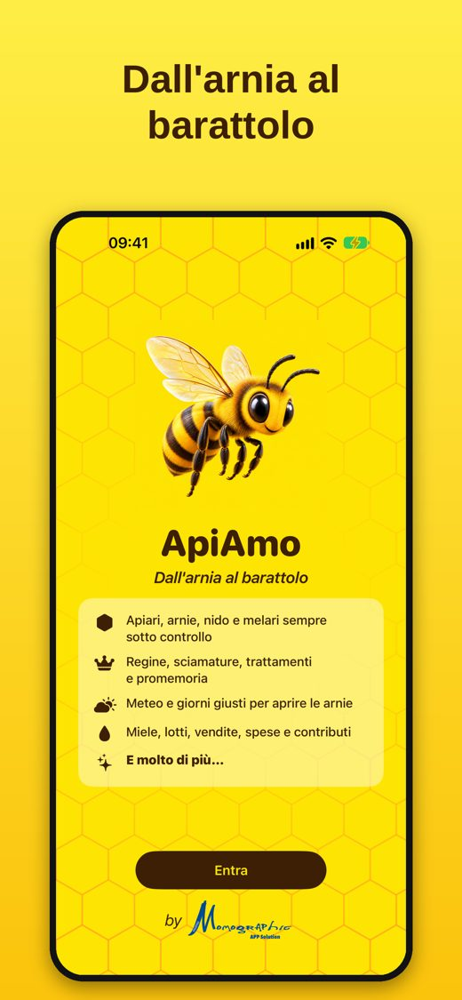
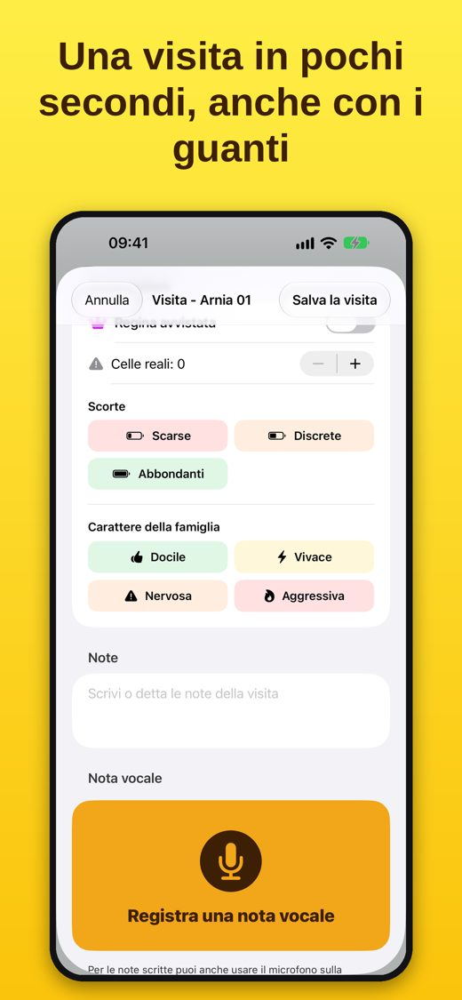
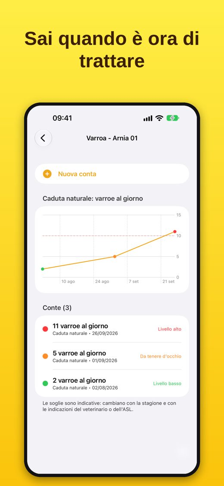
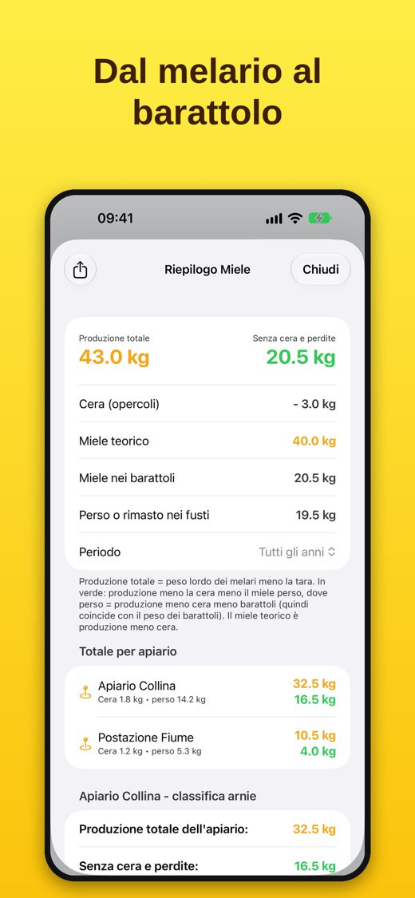
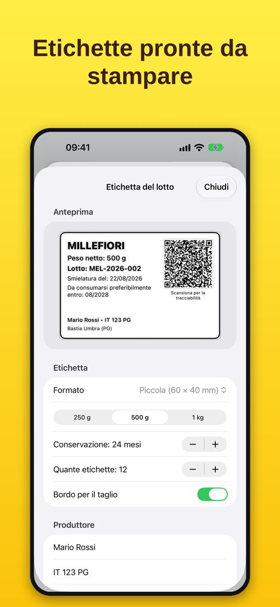
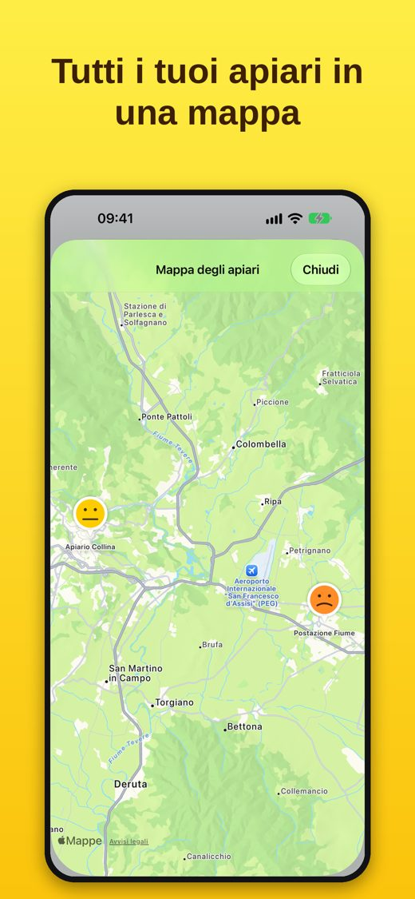
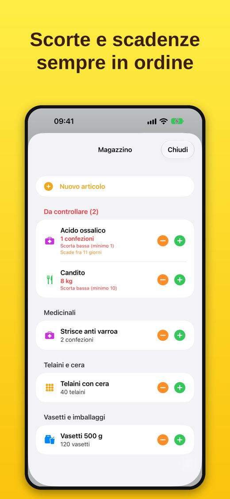
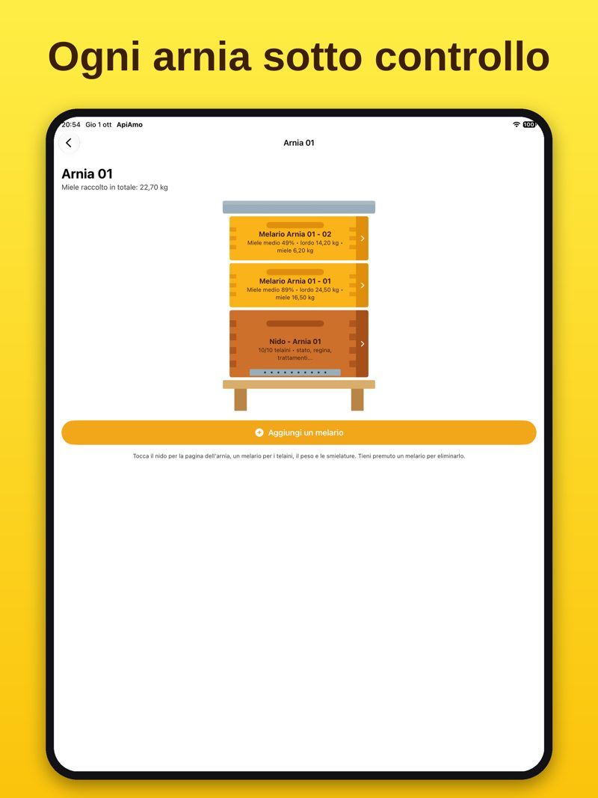
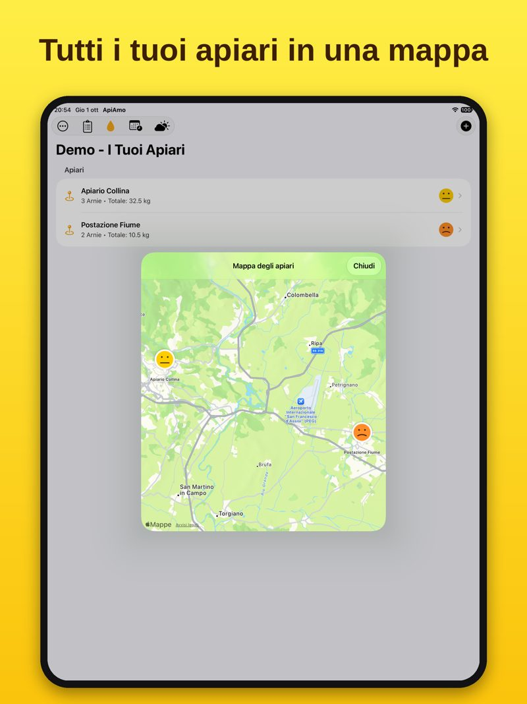

ApiAmo
Dall'arnia al barattolo
2.0 Nuova versione 2.0: dettatura vocale, nomadismo e tag NFC
Il quaderno digitale dell'apicoltore. Segui ogni arnia, registra le visite in pochi secondi anche con i guanti o dettandole a voce, tieni d'occhio varroa e trattamenti, e porta il tuo miele fino all'etichetta. Tutto sul tuo iPhone e iPad, senza account e senza abbonamenti.
Gratis da scaricare · prova con 1 apiario e 3 arnie · sblocco completo con un unico acquisto

Inquadra con il telefono per scaricare
Com'è fatta







Cosa puoi fare con ApiAmo
Apiari e mappa
Tutti i tuoi apiari su una mappa, ognuno con la faccina che ne riassume la salute, la scheda con i codici e i documenti.
Arnie, telaini e melari
Arnie in tre formati, 10/9, 7/6 e 5/4: il nido con i suoi telaini (covata, miele, polline…) e i melari con la pesatura. Sposti i telaini con lo storico e «Sistema telaini» ti aiuta quando il nido è pieno.
Visite in pochi secondi
Stato con una faccina, regina, celle reali, scorte e carattere della famiglia. Foto, note scritte o dettate e note vocali.
Dettatura vocale
Tocca «Registra la visita» e parla: l'app compila stato, regina, celle reali, scorte, carattere, telaini, trattamenti e nutrizione, poi ti mostra il riepilogo da correggere. Con Apple Intelligence, dove disponibile, capisce anche il parlato libero.
Nomadismo
Porti le arnie, anche da più apiari, in una postazione con fioritura, periodo e posizione sulla mappa, con la lista di cosa fare per legge nel tuo paese da spuntare. Al rientro tornano a casa, in un altro apiario o in uno nuovo. PDF dell'anno.
Varroa e trattamenti
Conte della varroa con grafico e avviso, trattamenti con lotto, scadenza e documenti del medicinale.
Malattie e problemi
Segnali malattie, parassiti e problemi della famiglia con gravità e foto; per le malattie da denunciare compare un avviso. Le arnie con un problema aperto sono in rosso nell'apiario e sulla mappa.
Regine, nutrizione, sciamature
Età e colore di marcatura della regina, razza e allevatore, nutrizione con le quantità, sciami che diventano nuove arnie.
Promemoria e meteo
Agenda con notifiche: promemoria che si ripetono, per più arnie, per un apiario o generali, con avviso in anticipo, e quelli proposti dall'app (varroa dopo il trattamento, rientro dal nomadismo, compiti del mese). Previsioni di ogni apiario con i giorni adatti alla visita.
Guida e normativa
La guida dell'apicoltore con cosa fare nel mese e il calendario dell'anno, adattata alla tua zona; la normativa di 12 paesi, con la data di revisione.
Miele, lotti ed etichette
Smielatura dai melari con lotti tracciabili, anche da più apiari, e gradi Brix nel lotto; invasettamento, etichette con codice QR pronte da stampare e magazzino dei vasetti. Vendite e clienti.
Codici QR, targhette e tag NFC
Targhette numerate da far stampare, con il numero di registro dell'apicoltore. In apiario «Inquadra» apre l'arnia e posa o sposta i melari. Sull'iPhone anche tag NFC, con la stessa numerazione: avvicini il telefono e si apre l'arnia o il telaino.
Conti e magazzino
Nel menu «Spese e contributi»: spese, contributi e ricavi con documenti e riepilogo. Magazzino con scorte minime e scadenze di medicinali, candito e vasetti.
I tuoi dati restano tuoi
Niente account e niente pubblicità. I dati stanno sul tuo dispositivo o, se lo scegli, nel tuo iCloud, per averli uguali su iPhone e iPad. Backup completo e blocco con Face ID.
Come si usa
- Scarica ApiAmo e tocca «Entra».
- Tocca «Aggiungi apiario», poi apri l'apiario e tocca «Aggiungi arnia».
- Apri l'arnia e tocca il nido: trovi stato, telaini, visite, varroa, trattamenti, regina e promemoria. Con «Detta la visita» la registri a voce.
- Dal menu ⋯ in alto a destra trovi mappa, guida, nomadismo, smielatura, miele e lotti, spese e contributi, grafici, magazzino, codici QR, iCloud e backup.
- Vuoi solo dare un'occhiata? Apri la «Demo guidata» dal menu ⋯: ti mostra tutto con dati di esempio.
Prezzo
ApiAmo si scarica gratis e si prova con 1 apiario e 3 arnie. Con un acquisto unico, senza abbonamento, togli ogni limite per sempre, nomadismo compreso. Pacchetti facoltativi, anch'essi ad acquisto unico: «Produzione miele» (smielatura, invasettamento, magazzino dei vasetti), «Identificazione» (codici QR, targhette e tag NFC) e «Dettatura» (visite dettate a voce). Con «ApiAmo Completo» hai lo sblocco e tutti i pacchetti a un prezzo più basso.
Offerta di lancio: «ApiAmo Completo» è scontato fino al 31 dicembre.
Per iPhone e iPad
Funziona da iOS 17, su iPhone e iPad (su iPad testi, tasti e finestre sono più grandi, comodi anche con i guanti). Pronta per iPhone Duo, chiuso o aperto, in verticale e in orizzontale. Disponibile in italiano, inglese, francese, spagnolo, tedesco, rumeno e greco.


ApiAmo
From hive to jar
2.0 New version 2.0: voice dictation, migratory beekeeping and NFC tags
The beekeeper's digital notebook. Follow every hive, record visits in seconds even with gloves on or by voice, keep an eye on varroa and treatments, and take your honey all the way to the label. All on your iPhone and iPad, with no account and no subscription.
Free to download · try it with 1 apiary and 3 hives · full unlock with a one-time purchase
Scan with your phone to download
Take a look
What you can do with ApiAmo
Apiaries and map
All your apiaries on a map, each with a face summarising its health, plus a record card with codes and documents.
Hives, frames and supers
Hives in three formats, 10/9, 7/6 and 5/4: the brood box with its frames (brood, honey, pollen…) and the supers with their weights. Frame moves keep their history, and “Arrange frames” helps when the brood box is full.
Visits in seconds
Status with a face, queen, queen cells, stores and temperament. Photos, typed or dictated notes and voice notes.
Voice dictation
Tap “Record the inspection” and talk: the app fills in status, queen, queen cells, stores, temperament, frames, treatments and feeding, then shows a summary to correct. With Apple Intelligence, where available, it also understands free speech.
Migratory beekeeping
Move hives, even from several apiaries, to a site with bloom, period and map position, with a checklist of what the law requires in your country. On return they go home, to another apiary or to a new one. Yearly PDF.
Varroa and treatments
Varroa counts with a chart and alerts; treatments with batch, expiry date and medicine documents.
Diseases and problems
Report diseases, parasites and colony problems with severity and photos; an alert appears for notifiable diseases. Hives with an open problem show in red in the apiary and on the map.
Queens, feeding, swarms
Queen age and marking colour, breed and breeder, feeding with quantities, swarms that become new hives.
Reminders and weather
Agenda with notifications: repeating reminders for several hives, an apiary or in general, with an advance alert, plus those suggested by the app (varroa check after treatment, return from a migratory site, the month's tasks). Forecasts for each apiary with the best days for a visit.
Guide and regulations
The beekeeper's guide with what to do this month and the yearly calendar, adapted to your area; regulations of 12 countries, with the revision date.
Honey, lots and labels
Extraction from the supers with traceable lots, even from several apiaries, and Brix readings in the lot; jarring, print-ready labels with a QR code and jar stock. Sales and customers.
QR codes, tags and NFC
Numbered tags to have printed, with your beekeeper registration number. In the apiary, “Scan” opens the hive and places or moves supers. On iPhone also NFC tags with the same numbering: hold the phone near and the hive or frame opens.
Accounts and inventory
In the “Expenses and grants” menu: expenses, grants and income with documents and a summary. Inventory with minimum stock and expiry dates for medicines, fondant and jars.
Your data stays yours
No account and no ads. Data stays on your device or, if you choose, in your iCloud, so it is the same on iPhone and iPad. Full backups and an optional Face ID lock.
How it works
- Download ApiAmo and tap “Enter”.
- Tap “Add apiary”, then open the apiary and tap “Add hive”.
- Open the hive and tap the brood box: you'll find status, frames, visits, varroa, treatments, queen and reminders. With “Dictate the inspection” you record it by voice.
- The ⋯ menu at the top right contains the map, guide, migratory beekeeping, extraction, honey and lots, expenses and grants, charts, inventory, QR codes, iCloud and backup.
- Just want a look? Open the “Guided demo” from the ⋯ menu: it shows everything with sample data.
Price
ApiAmo is free to download and you can try it with 1 apiary and 3 hives. A single purchase, with no subscription, removes all limits forever, migratory beekeeping included. Optional packs, also one-time purchases: “Honey production” (extraction, jarring, jar stock), “Identification” (QR codes, tags and NFC tags) and “Dictation” (inspections by voice). With “ApiAmo Complete” you get the unlock and every pack for less.
Launch offer: “ApiAmo Complete” is discounted until 31 December.
For iPhone and iPad
Works from iOS 17 on iPhone and iPad (on iPad, text, buttons and windows are bigger, easy to use even with gloves). Ready for iPhone Duo, folded or unfolded, in portrait and landscape. Available in Italian, English, French, Spanish, German, Romanian and Greek.
ApiAmo
De la ruche au pot
2.0 Nouvelle version 2.0 : dictée vocale, transhumance et tags NFC
Le carnet numérique de l'apiculteur. Suivez chaque ruche, enregistrez vos visites en quelques secondes même avec des gants ou à la voix, surveillez varroa et traitements, et menez votre miel jusqu'à l'étiquette. Tout sur votre iPhone et iPad, sans compte et sans abonnement.
Téléchargement gratuit · essai avec 1 rucher et 3 ruches · déblocage complet par un achat unique
Scannez avec votre téléphone pour télécharger
Aperçu
Ce que vous pouvez faire avec ApiAmo
Ruchers et carte
Tous vos ruchers sur une carte, chacun avec un visage qui résume sa santé, et une fiche avec codes et documents.
Ruches, cadres et hausses
Ruches en trois formats, 10/9, 7/6 et 5/4 : le corps avec ses cadres (couvain, miel, pollen…) et les hausses avec leur pesée. Les déplacements de cadres gardent leur historique et « Organiser les cadres » vous aide quand le corps est plein.
Visites en quelques secondes
État avec un visage, reine, cellules royales, réserves et caractère de la colonie. Photos, notes écrites ou dictées et notes vocales.
Dictée vocale
Touchez « Enregistrer la visite » et parlez : l'app remplit état, reine, cellules royales, réserves, caractère, cadres, traitements et nourrissement, puis affiche le récapitulatif à corriger. Avec Apple Intelligence, là où elle est disponible, elle comprend aussi la parole libre.
Transhumance
Amenez les ruches, même de plusieurs ruchers, sur un emplacement avec floraison, période et position sur la carte, avec la liste à cocher de ce que la loi demande dans votre pays. Au retour, elles rentrent chez elles, vont dans un autre rucher ou dans un nouveau. PDF de l'année.
Varroa et traitements
Comptages de varroa avec graphique et alerte ; traitements avec lot, date d'expiration et documents du médicament.
Maladies et problèmes
Signalez maladies, parasites et problèmes de la colonie avec gravité et photos ; une alerte apparaît pour les maladies à déclarer. Les ruches avec un problème ouvert sont en rouge dans le rucher et sur la carte.
Reines, nourrissement, essaims
Âge et couleur de marquage de la reine, race et éleveur, nourrissement avec les quantités, essaims qui deviennent de nouvelles ruches.
Rappels et météo
Agenda avec notifications : rappels répétés, pour plusieurs ruches, un rucher ou en général, avec alerte à l'avance, et ceux proposés par l'app (contrôle du varroa après traitement, retour de transhumance, travaux du mois). Prévisions de chaque rucher avec les jours propices à la visite.
Guide et réglementation
Le guide de l'apiculteur avec les travaux du mois et le calendrier de l'année, adapté à votre région ; la réglementation de 12 pays, avec la date de révision.
Miel, lots et étiquettes
Extraction des hausses avec lots traçables, même de plusieurs ruchers, et degrés Brix dans le lot ; mise en pots, étiquettes avec code QR prêtes à imprimer et stock de pots. Ventes et clients.
Codes QR, plaques et tags NFC
Plaques numérotées à faire imprimer, avec votre numéro d'enregistrement d'apiculteur. Au rucher, « Scanner » ouvre la ruche et pose ou déplace les hausses. Sur l'iPhone, aussi des tags NFC avec la même numérotation : approchez le téléphone et la ruche ou le cadre s'ouvre.
Comptes et stock
Dans le menu « Dépenses et subventions » : dépenses, subventions et recettes avec documents et récapitulatif. Stock avec minimum et dates d'expiration des médicaments, du candi et des pots.
Vos données restent à vous
Ni compte ni publicité. Les données restent sur votre appareil ou, si vous le choisissez, dans votre iCloud, pour les avoir identiques sur iPhone et iPad. Sauvegarde complète et verrouillage Face ID.
Comment l'utiliser
- Téléchargez ApiAmo et touchez « Entrer ».
- Touchez « Ajouter un rucher », ouvrez le rucher et touchez « Ajouter une ruche ».
- Ouvrez la ruche et touchez le corps : vous y trouvez état, cadres, visites, varroa, traitements, reine et rappels. Avec « Dicter la visite », vous l'enregistrez à la voix.
- Le menu ⋯ en haut à droite contient la carte, le guide, la transhumance, l'extraction, miel et lots, dépenses et subventions, graphiques, stock, codes QR, iCloud et sauvegarde.
- Juste pour voir ? Ouvrez la « Démo guidée » depuis le menu ⋯ : elle montre tout avec des données d'exemple.
Prix
ApiAmo se télécharge gratuitement et s'essaie avec 1 rucher et 3 ruches. Un achat unique, sans abonnement, supprime toutes les limites pour toujours, transhumance comprise. Packs facultatifs, eux aussi en achat unique : « Production de miel » (extraction, mise en pots, stock de pots), « Identification » (codes QR, plaques et tags NFC) et « Dictée » (visites dictées à la voix). Avec « ApiAmo Complet », vous avez le déblocage et tous les packs à prix réduit.
Offre de lancement : « ApiAmo Complet » est en promotion jusqu'au 31 décembre.
Pour iPhone et iPad
Fonctionne à partir d'iOS 17, sur iPhone et iPad (sur iPad, textes, boutons et fenêtres sont plus grands, pratiques même avec des gants). Prête pour l'iPhone Duo, plié ou déplié, en portrait et en paysage. Disponible en italien, anglais, français, espagnol, allemand, roumain et grec.
ApiAmo
De la colmena al tarro
2.0 Nueva versión 2.0: dictado por voz, trashumancia y etiquetas NFC
El cuaderno digital del apicultor. Sigue cada colmena, registra las visitas en pocos segundos incluso con guantes o por voz, vigila la varroa y los tratamientos, y lleva tu miel hasta la etiqueta. Todo en tu iPhone y iPad, sin cuenta y sin suscripción.
Descarga gratuita · prueba con 1 colmenar y 3 colmenas · desbloqueo completo con una sola compra
Escanea con tu teléfono para descargar
Así es
Qué puedes hacer con ApiAmo
Colmenares y mapa
Todos tus colmenares en un mapa, cada uno con una carita que resume su salud, y una ficha con códigos y documentos.
Colmenas, cuadros y alzas
Colmenas en tres formatos, 10/9, 7/6 y 5/4: la cámara de cría con sus cuadros (cría, miel, polen…) y las alzas con su pesaje. Los movimientos de cuadros guardan su historial y «Ordenar cuadros» te ayuda cuando el nido está lleno.
Visitas en segundos
Estado con una carita, reina, celdas reales, reservas y carácter de la familia. Fotos, notas escritas o dictadas y notas de voz.
Dictado por voz
Toca «Registrar la revisión» y habla: la app rellena estado, reina, celdas reales, reservas, carácter, cuadros, tratamientos y alimentación, y te muestra el resumen para corregir. Con Apple Intelligence, donde esté disponible, también entiende el habla libre.
Trashumancia
Llevas las colmenas, incluso de varios colmenares, a un asentamiento con floración, periodo y posición en el mapa, con la lista de lo que exige la ley en tu país para marcar. Al regresar vuelven a casa, a otro colmenar o a uno nuevo. PDF del año.
Varroa y tratamientos
Conteos de varroa con gráfico y aviso; tratamientos con lote, caducidad y documentos del medicamento.
Enfermedades y problemas
Señalas enfermedades, parásitos y problemas de la familia con gravedad y fotos; para las enfermedades de declaración obligatoria aparece un aviso. Las colmenas con un problema abierto aparecen en rojo en el colmenar y en el mapa.
Reinas, alimentación, enjambres
Edad y color de marcado de la reina, raza y criador, alimentación con cantidades, enjambres que se convierten en nuevas colmenas.
Recordatorios y tiempo
Agenda con notificaciones: recordatorios que se repiten, para varias colmenas, un colmenar o en general, con aviso previo, y los que propone la app (control de varroa tras el tratamiento, regreso de la trashumancia, tareas del mes). Previsión de cada colmenar con los días adecuados para la visita.
Guía y normativa
La guía del apicultor con lo que hay que hacer en el mes y el calendario del año, adaptada a tu zona; la normativa de 12 países, con la fecha de revisión.
Miel, lotes y etiquetas
Extracción de las alzas con lotes trazables, incluso de varios colmenares, y grados Brix en el lote; envasado, etiquetas con código QR listas para imprimir y almacén de tarros. Ventas y clientes.
Códigos QR, placas y etiquetas NFC
Placas numeradas para imprimir, con tu número de registro de apicultor. En el colmenar, «Escanear» abre la colmena y pone o mueve las alzas. En el iPhone también etiquetas NFC con la misma numeración: acercas el teléfono y se abre la colmena o el cuadro.
Cuentas y almacén
En el menú «Gastos y subvenciones»: gastos, subvenciones e ingresos con documentos y resumen. Almacén con existencias mínimas y caducidades de medicamentos, candi y tarros.
Tus datos son tuyos
Sin cuenta y sin publicidad. Los datos se quedan en tu dispositivo o, si lo eliges, en tu iCloud, para tenerlos iguales en iPhone y iPad. Copia completa y bloqueo con Face ID.
Cómo se usa
- Descarga ApiAmo y toca «Entrar».
- Toca «Añadir colmenar», abre el colmenar y toca «Añadir colmena».
- Abre la colmena y toca la cámara de cría: encontrarás estado, cuadros, visitas, varroa, tratamientos, reina y recordatorios. Con «Dictar la revisión» la registras por voz.
- El menú ⋯ arriba a la derecha contiene el mapa, la guía, la trashumancia, la extracción, miel y lotes, gastos y subvenciones, gráficos, almacén, códigos QR, iCloud y copias de seguridad.
- ¿Solo quieres echar un vistazo? Abre la «Demo guiada» desde el menú ⋯: lo muestra todo con datos de ejemplo.
Precio
ApiAmo se descarga gratis y se prueba con 1 colmenar y 3 colmenas. Con una sola compra, sin suscripción, quitas todos los límites para siempre, trashumancia incluida. Paquetes opcionales, también de compra única: «Producción de miel» (extracción, envasado, almacén de tarros), «Identificación» (códigos QR, placas y etiquetas NFC) y «Dictado» (revisiones dictadas por voz). Con «ApiAmo Completo» tienes el desbloqueo y todos los paquetes a un precio menor.
Oferta de lanzamiento: «ApiAmo Completo» tiene descuento hasta el 31 de diciembre.
Para iPhone y iPad
Funciona desde iOS 17, en iPhone y iPad (en iPad textos, botones y ventanas son más grandes, cómodos incluso con guantes). Lista para el iPhone Duo, plegado o desplegado, en vertical y en horizontal. Disponible en italiano, inglés, francés, español, alemán, rumano y griego.
ApiAmo
Von der Beute ins Glas
2.0 Neue Version 2.0: Sprachdiktat, Wanderimkerei und NFC-Tags
Das digitale Notizbuch des Imkers. Behalte jede Beute im Blick, erfasse Durchsichten in Sekunden auch mit Handschuhen oder per Sprache, beobachte Varroa und Behandlungen und bring deinen Honig bis aufs Etikett. Alles auf iPhone und iPad, ohne Konto und ohne Abo.
Kostenlos laden · Test mit 1 Bienenstand und 3 Beuten · volle Freischaltung mit einem einmaligen Kauf
Mit dem Handy scannen und laden
So sieht es aus
Was du mit ApiAmo machen kannst
Bienenstände und Karte
Alle Bienenstände auf einer Karte, jeder mit einem Gesicht für seinen Zustand, dazu ein Datenblatt mit Nummern und Dokumenten.
Beuten, Rähmchen und Honigräume
Beuten in drei Formaten, 10/9, 7/6 und 5/4: der Brutraum mit seinen Rähmchen (Brut, Honig, Pollen…) und die Honigräume mit Wägung. Umgesetzte Rähmchen behalten ihren Verlauf, und „Waben ordnen“ hilft, wenn der Brutraum voll ist.
Durchsicht in Sekunden
Zustand mit einem Gesicht, Königin, Weiselzellen, Vorräte und Sanftmut. Fotos, geschriebene oder diktierte Notizen und Sprachnotizen.
Sprachdiktat
Tippe auf „Durchsicht aufnehmen“ und sprich: Die App füllt Zustand, Königin, Weiselzellen, Vorräte, Sanftmut, Rähmchen, Behandlungen und Fütterung aus und zeigt dir die Übersicht zum Korrigieren. Mit Apple Intelligence, wo verfügbar, versteht sie auch freie Sprache.
Wanderimkerei
Bring Beuten, auch von mehreren Ständen, an einen Wanderstandort mit Tracht, Zeitraum und Position auf der Karte, mit einer Liste der gesetzlichen Pflichten deines Landes zum Abhaken. Bei der Rückkehr kommen sie heim, an einen anderen oder einen neuen Stand. Jahres-PDF.
Varroa und Behandlungen
Varroa-Zählungen mit Diagramm und Warnung; Behandlungen mit Charge, Ablaufdatum und Unterlagen des Mittels.
Krankheiten und Probleme
Melde Krankheiten, Parasiten und Probleme des Volkes mit Schweregrad und Fotos; bei meldepflichtigen Krankheiten erscheint ein Hinweis. Beuten mit einem offenen Problem sind im Stand und auf der Karte rot markiert.
Königinnen, Fütterung, Schwärme
Alter und Zeichenfarbe der Königin, Rasse und Züchter, Fütterung mit Mengen, Schwärme, die zu neuen Beuten werden.
Erinnerungen und Wetter
Kalender mit Mitteilungen: wiederkehrende Erinnerungen für mehrere Beuten, einen Stand oder allgemein, mit Vorwarnung, dazu Vorschläge der App (Varroa-Kontrolle nach der Behandlung, Rückkehr von der Wanderung, Aufgaben des Monats). Vorhersage für jeden Stand mit den besten Tagen für eine Durchsicht.
Ratgeber und Vorschriften
Der Imker-Ratgeber mit den Aufgaben des Monats und dem Jahreskalender, angepasst an deine Region; Vorschriften aus 12 Ländern, mit Stand der Überarbeitung.
Honig, Chargen und Etiketten
Schleudern aus den Honigräumen mit rückverfolgbaren Chargen, auch von mehreren Ständen, und Brix-Werten in der Charge; Abfüllen, druckfertige Etiketten mit QR-Code und Glaslager. Verkäufe und Kunden.
QR-Codes, Schilder und NFC-Tags
Nummerierte Schilder zum Drucken lassen, mit deiner Imker-Registriernummer. Am Stand öffnet „Scannen“ die Beute und setzt Honigräume auf oder um. Auf dem iPhone auch NFC-Tags mit derselben Nummerierung: Telefon heranhalten, und Beute oder Rähmchen öffnen sich.
Finanzen und Lager
Im Menü „Ausgaben und Fördergelder“: Ausgaben, Fördergelder und Einnahmen mit Dokumenten und Übersicht. Lager mit Mindestbeständen und Ablaufdaten für Mittel, Futterteig und Gläser.
Deine Daten bleiben deine
Kein Konto, keine Werbung. Die Daten bleiben auf deinem Gerät oder, wenn du willst, in deiner iCloud, damit sie auf iPhone und iPad gleich sind. Vollständiges Backup und Face-ID-Sperre.
So funktioniert es
- Lade ApiAmo und tippe auf „Los geht's“.
- Tippe auf „Bienenstand hinzufügen“, öffne den Stand und tippe auf „Beute hinzufügen“.
- Öffne die Beute und tippe auf den Brutraum: dort findest du Zustand, Rähmchen, Durchsichten, Varroa, Behandlungen, Königin und Erinnerungen. Mit „Durchsicht diktieren“ erfasst du sie per Sprache.
- Im Menü ⋯ oben rechts findest du Karte, Ratgeber, Wanderimkerei, Schleudern, Honig und Chargen, Ausgaben und Fördergelder, Diagramme, Lager, QR-Codes, iCloud und Backup.
- Nur mal schauen? Öffne die „Geführte Demo“ im Menü ⋯: sie zeigt alles mit Beispieldaten.
Preis
ApiAmo ist kostenlos und lässt sich mit 1 Bienenstand und 3 Beuten testen. Ein einmaliger Kauf, ohne Abo, hebt alle Grenzen für immer auf, Wanderimkerei inklusive. Optionale Pakete, ebenfalls Einmalkäufe: „Honigproduktion“ (Schleudern, Abfüllen, Glaslager), „Kennzeichnung“ (QR-Codes, Schilder und NFC-Tags) und „Diktat“ (Durchsichten per Sprache). Mit „ApiAmo Komplett“ bekommst du die Freischaltung und alle Pakete günstiger.
Einführungsangebot: „ApiAmo Komplett“ ist bis zum 31. Dezember reduziert.
Für iPhone und iPad
Läuft ab iOS 17 auf iPhone und iPad (auf dem iPad sind Texte, Tasten und Fenster größer, bequem auch mit Handschuhen). Bereit für das iPhone Duo, zugeklappt oder aufgeklappt, im Hoch- und Querformat. Verfügbar auf Italienisch, Englisch, Französisch, Spanisch, Deutsch, Rumänisch und Griechisch.
ApiAmo
De la stup la borcan
2.0 Versiune nouă 2.0: dictare vocală, stupărit pastoral și etichete NFC
Caietul digital al apicultorului. Urmărește fiecare stup, înregistrează vizitele în câteva secunde chiar și cu mănuși sau cu vocea, ține sub ochi varroa și tratamentele și du-ți mierea până la etichetă. Totul pe iPhone și iPad, fără cont și fără abonament.
Descărcare gratuită · probă cu 1 stupină și 3 stupi · deblocare completă cu o singură achiziție
Scanează cu telefonul pentru a descărca
Cum arată
Ce poți face cu ApiAmo
Stupine și hartă
Toate stupinele pe o hartă, fiecare cu o față care îi rezumă starea, plus o fișă cu coduri și documente.
Stupi, rame și magazii
Stupi în trei formate, 10/9, 7/6 și 5/4: cuibul cu ramele sale (puiet, miere, polen…) și magaziile cu cântărirea. Mutările ramelor păstrează istoricul, iar „Aranjează ramele” te ajută când cuibul este plin.
Vizite în câteva secunde
Starea cu o față, regina, botci, rezerve și caracterul familiei. Fotografii, note scrise sau dictate și note vocale.
Dictare vocală
Atingi „Înregistrează vizita” și vorbești: aplicația completează starea, regina, botcile, rezervele, temperamentul, ramele, tratamentele și hrănirea și îți arată rezumatul de corectat. Cu Apple Intelligence, unde este disponibil, înțelege și vorbirea liberă.
Stupărit pastoral
Duci stupii, chiar din mai multe stupine, pe un amplasament cu cules, perioadă și poziție pe hartă, cu lista de bifat a ce cere legea în țara ta. La întoarcere revin acasă, merg în altă stupină sau într-una nouă. PDF anual.
Varroa și tratamente
Numărări de varroa cu grafic și avertizare; tratamente cu lot, dată de expirare și documentele medicamentului.
Boli și probleme
Semnalezi boli, paraziți și probleme ale familiei, cu gravitate și fotografii; pentru bolile de declarat apare o alertă. Stupii cu o problemă deschisă apar cu roșu în stupină și pe hartă.
Regine, hrănire, roiuri
Vârsta și culoarea de marcare a reginei, rasa și crescătorul, hrănirea cu cantități, roiuri care devin stupi noi.
Mementouri și vreme
Agendă cu notificări: mementouri repetate, pentru mai mulți stupi, o stupină sau generale, cu anunț din timp, plus cele propuse de aplicație (verificarea varroa după tratament, întoarcerea din pastoral, sarcinile lunii). Prognoza fiecărei stupine cu zilele potrivite pentru vizită.
Ghid și legislație
Ghidul apicultorului cu ce ai de făcut luna aceasta și calendarul anului, adaptat zonei tale; legislația din 12 țări, cu data revizuirii.
Miere, loturi și etichete
Extracția din magazii cu loturi trasabile, chiar din mai multe stupine, și grade Brix în lot; îmbuteliere, etichete cu cod QR gata de tipărit și stoc de borcane. Vânzări și clienți.
Coduri QR, plăcuțe și etichete NFC
Plăcuțe numerotate de tipărit, cu numărul tău de înregistrare ca apicultor. În stupină, „Scanează” deschide stupul și pune sau mută magaziile. Pe iPhone și etichete NFC, cu aceeași numerotare: apropii telefonul și se deschide stupul sau rama.
Conturi și depozit
În meniul „Cheltuieli și subvenții”: cheltuieli, subvenții și venituri cu documente și rezumat. Depozit cu stocuri minime și date de expirare pentru medicamente, șerbet și borcane.
Datele tale rămân ale tale
Fără cont și fără reclame. Datele rămân pe dispozitivul tău sau, dacă alegi, în iCloud-ul tău, ca să fie la fel pe iPhone și iPad. Backup complet și blocare cu Face ID.
Cum se folosește
- Descarcă ApiAmo și atinge „Intră”.
- Atinge „Adaugă stupină”, deschide stupina și atinge „Adaugă stup”.
- Deschide stupul și atinge cuibul: găsești starea, ramele, vizitele, varroa, tratamentele, regina și mementourile. Cu „Dictează vizita” o înregistrezi cu vocea.
- Meniul ⋯ din dreapta sus conține harta, ghidul, stupăritul pastoral, extracția, miere și loturi, cheltuieli și subvenții, grafice, depozitul, coduri QR, iCloud și backupul.
- Vrei doar să arunci o privire? Deschide „Demonstrație ghidată” din meniul ⋯: îți arată totul cu date de exemplu.
Preț
ApiAmo se descarcă gratuit și se încearcă cu 1 stupină și 3 stupi. O singură achiziție, fără abonament, elimină toate limitele pentru totdeauna, inclusiv pentru stupăritul pastoral. Pachete opționale, tot cu achiziție unică: „Producția de miere” (extracție, îmbuteliere, stoc de borcane), „Identificare” (coduri QR, plăcuțe și etichete NFC) și „Dictare” (vizite dictate cu vocea). Cu „ApiAmo Complet” ai deblocarea și toate pachetele la un preț mai mic.
Ofertă de lansare: „ApiAmo Complet” este redus până pe 31 decembrie.
Pentru iPhone și iPad
Funcționează de la iOS 17, pe iPhone și iPad (pe iPad textele, butoanele și ferestrele sunt mai mari, comode chiar și cu mănuși). Pregătită pentru iPhone Duo, închis sau deschis, pe verticală și pe orizontală. Disponibilă în italiană, engleză, franceză, spaniolă, germană, română și greacă.
ApiAmo
Από την κυψέλη στο βάζο
2.0 Νέα έκδοση 2.0: φωνητική υπαγόρευση, νομαδική μελισσοκομία και ετικέτες NFC
Το ψηφιακό τετράδιο του μελισσοκόμου. Παρακολούθησε κάθε κυψέλη, κατάγραψε τις επισκέψεις σε λίγα δευτερόλεπτα ακόμη και με γάντια ή με τη φωνή, πρόσεχε τη βαρρόα και τις θεραπείες και φτάσε το μέλι σου μέχρι την ετικέτα. Όλα στο iPhone και το iPad σου, χωρίς λογαριασμό και χωρίς συνδρομή.
Δωρεάν λήψη · δοκιμή με 1 μελισσοκομείο και 3 κυψέλες · πλήρες ξεκλείδωμα με μία αγορά
Σάρωσε με το τηλέφωνο για λήψη
Πώς είναι
Τι μπορείς να κάνεις με το ApiAmo
Μελισσοκομεία και χάρτης
Όλα τα μελισσοκομεία σου σε έναν χάρτη, το καθένα με ένα προσωπάκι που συνοψίζει την κατάστασή του, και καρτέλα με κωδικούς και έγγραφα.
Κυψέλες, πλαίσια και πατώματα
Κυψέλες σε τρία μεγέθη, 10/9, 7/6 και 5/4: ο γόνος με τα πλαίσιά του (γόνος, μέλι, γύρη…) και τα πατώματα με το ζύγισμα. Οι μετακινήσεις πλαισίων κρατούν ιστορικό και η «Τακτοποίηση πλαισίων» σε βοηθά όταν η φωλιά είναι γεμάτη.
Επισκέψεις σε δευτερόλεπτα
Κατάσταση με ένα προσωπάκι, βασίλισσα, βασιλικά κελιά, αποθέματα και χαρακτήρας. Φωτογραφίες, γραπτές ή υπαγορευμένες σημειώσεις και φωνητικές σημειώσεις.
Φωνητική υπαγόρευση
Πάτησε «Κατέγραψε την επίσκεψη» και μίλα: η εφαρμογή συμπληρώνει κατάσταση, βασίλισσα, βασιλικά κελιά, αποθέματα, χαρακτήρα, πλαίσια, θεραπείες και τάισμα και σου δείχνει τη σύνοψη για διόρθωση. Με το Apple Intelligence, όπου είναι διαθέσιμο, καταλαβαίνει και ελεύθερο λόγο.
Νομαδική μελισσοκομία
Μεταφέρεις κυψέλες, και από πολλά μελισσοκομεία, σε θέση με ανθοφορία, περίοδο και σημείο στον χάρτη, με λίστα για τσεκάρισμα με όσα ζητά ο νόμος στη χώρα σου. Στην επιστροφή γυρίζουν σπίτι, σε άλλο ή σε νέο μελισσοκομείο. Ετήσιο PDF.
Βαρρόα και θεραπείες
Μετρήσεις βαρρόας με γράφημα και ειδοποίηση· θεραπείες με παρτίδα, ημερομηνία λήξης και έγγραφα του φαρμάκου.
Ασθένειες και προβλήματα
Καταγράφεις ασθένειες, παράσιτα και προβλήματα της αποικίας με σοβαρότητα και φωτογραφίες· για τις ασθένειες που δηλώνονται εμφανίζεται ειδοποίηση. Οι κυψέλες με ανοιχτό πρόβλημα φαίνονται κόκκινες στο μελισσοκομείο και στον χάρτη.
Βασίλισσες, τροφοδοσία, σμήνη
Ηλικία και χρώμα σήμανσης της βασίλισσας, φυλή και εκτροφέας, τροφοδοσία με ποσότητες, σμήνη που γίνονται νέες κυψέλες.
Υπενθυμίσεις και καιρός
Ατζέντα με ειδοποιήσεις: επαναλαμβανόμενες υπενθυμίσεις για πολλές κυψέλες, ένα μελισσοκομείο ή γενικές, με ειδοποίηση νωρίτερα, και όσες προτείνει η εφαρμογή (έλεγχος βαρρόας μετά τη θεραπεία, επιστροφή από νομαδική θέση, εργασίες του μήνα). Πρόγνωση για κάθε μελισσοκομείο με τις κατάλληλες μέρες για επίσκεψη.
Οδηγός και νομοθεσία
Ο οδηγός του μελισσοκόμου με τι να κάνεις αυτόν τον μήνα και το ημερολόγιο της χρονιάς, προσαρμοσμένος στην περιοχή σου· η νομοθεσία 12 χωρών, με την ημερομηνία αναθεώρησης.
Μέλι, παρτίδες και ετικέτες
Τρύγος από τα πατώματα με παρτίδες με ιχνηλασιμότητα, ακόμη και από πολλά μελισσοκομεία, και Brix στην παρτίδα· εμφιάλωση, ετικέτες με κωδικό QR έτοιμες για εκτύπωση και αποθήκη βάζων. Πωλήσεις και πελάτες.
Κωδικοί QR, ταμπέλες και ετικέτες NFC
Αριθμημένες ταμπέλες για τύπωμα, με τον αριθμό μητρώου μελισσοκόμου σου. Στο μελισσοκομείο η «Σάρωση» ανοίγει την κυψέλη και βάζει ή μετακινεί πατώματα. Στο iPhone και ετικέτες NFC με την ίδια αρίθμηση: πλησιάζεις το τηλέφωνο και ανοίγει η κυψέλη ή το πλαίσιο.
Οικονομικά και αποθήκη
Στο μενού «Έξοδα και επιδοτήσεις»: έξοδα, επιδοτήσεις και έσοδα με έγγραφα και σύνοψη. Αποθήκη με ελάχιστα αποθέματα και λήξεις φαρμάκων, ζαχαροζύμης και βάζων.
Τα δεδομένα σου είναι δικά σου
Χωρίς λογαριασμό και χωρίς διαφημίσεις. Τα δεδομένα μένουν στη συσκευή σου ή, αν το επιλέξεις, στο iCloud σου, για να είναι ίδια σε iPhone και iPad. Πλήρες αντίγραφο ασφαλείας και κλείδωμα Face ID.
Πώς χρησιμοποιείται
- Κατέβασε το ApiAmo και πάτησε «Είσοδος».
- Πάτησε «Προσθήκη μελισσοκομείου», άνοιξε το μελισσοκομείο και πάτησε «Προσθήκη κυψέλης».
- Άνοιξε την κυψέλη και πάτησε τον γόνο: θα βρεις κατάσταση, πλαίσια, επισκέψεις, βαρρόα, θεραπείες, βασίλισσα και υπενθυμίσεις. Με το «Υπαγόρευσε την επίσκεψη» την καταγράφεις με τη φωνή.
- Το μενού ⋯ πάνω δεξιά περιέχει τον χάρτη, τον οδηγό, τη νομαδική μελισσοκομία, τον τρύγο, μέλι και παρτίδες, έξοδα και επιδοτήσεις, γραφήματα, αποθήκη, κωδικούς QR, iCloud και αντίγραφα ασφαλείας.
- Θέλεις απλώς να ρίξεις μια ματιά; Άνοιξε το «Καθοδηγούμενο demo» από το μενού ⋯: τα δείχνει όλα με δεδομένα παραδείγματος.
Τιμή
Το ApiAmo κατεβαίνει δωρεάν και το δοκιμάζεις με 1 μελισσοκομείο και 3 κυψέλες. Με μία μόνο αγορά, χωρίς συνδρομή, αφαιρείς κάθε όριο για πάντα, μαζί και τη νομαδική μελισσοκομία. Προαιρετικά πακέτα, επίσης με μία αγορά: «Παραγωγή μελιού» (τρύγος, εμφιάλωση, αποθήκη βάζων), «Αναγνώριση» (κωδικοί QR, ταμπέλες και ετικέτες NFC) και «Υπαγόρευση» (επισκέψεις με τη φωνή). Με το «ApiAmo Πλήρες» έχεις το ξεκλείδωμα και όλα τα πακέτα σε χαμηλότερη τιμή.
Προσφορά κυκλοφορίας: το «ApiAmo Πλήρες» έχει έκπτωση έως τις 31 Δεκεμβρίου.
Για iPhone και iPad
Λειτουργεί από το iOS 17, σε iPhone και iPad (στο iPad κείμενα, κουμπιά και παράθυρα είναι μεγαλύτερα, βολικά ακόμη και με γάντια). Έτοιμο για iPhone Duo, κλειστό ή ανοιχτό, κάθετα και οριζόντια. Διαθέσιμο στα ιταλικά, αγγλικά, γαλλικά, ισπανικά, γερμανικά, ρουμανικά και ελληνικά.